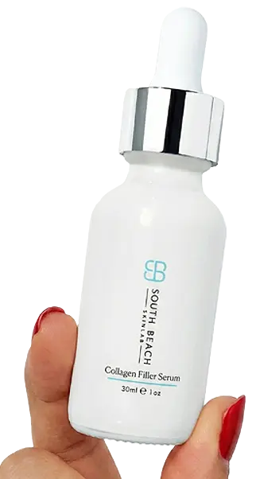
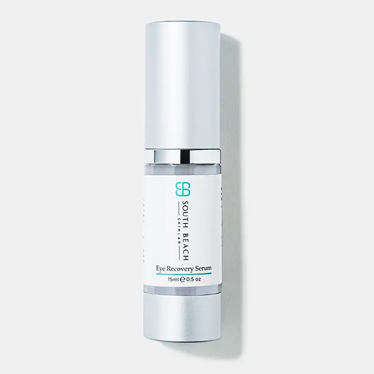
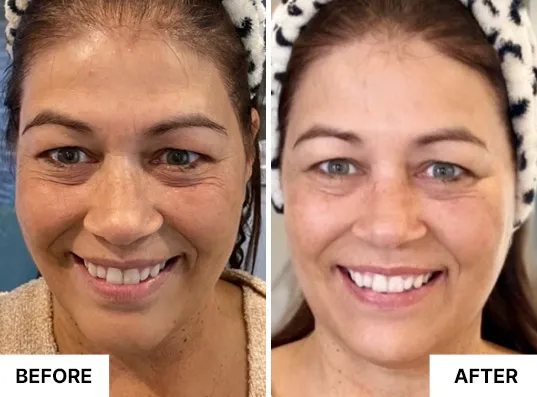
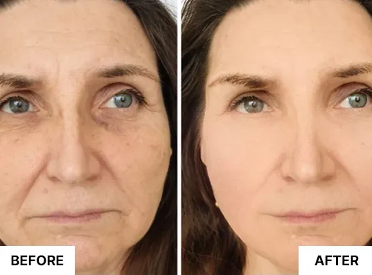
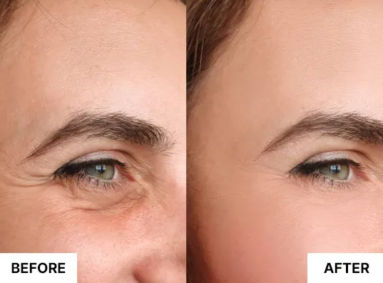
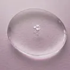
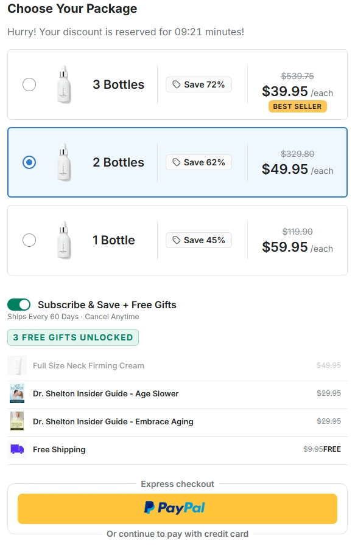

South Beach Skin Lab Collagen Filler Serum is a topical skincare formula designed to hydrate, plump, and smooth the appearance of fine lines and wrinkles. With soluble collagen, sodium hyaluronate, and Syn-Coll, it helps support a firmer, more youthful-looking complexion without injections or downtime. Add it to your daily routine for skin that looks refreshed, hydrated, and beautifully radiant.


As skin changes with age, it can lose some of its natural-looking plumpness, hydration, and firmness. South Beach Skin Lab Collagen Filler Serum is designed to help refresh the appearance of mature skin with a topical formula that combines soluble collagen, sodium hyaluronate, and Syn-Coll. It helps hydrate and visibly soften the look of fine lines and wrinkles as part of your everyday skincare routine.
South Beach Skin Lab delivers a concentrated topical blend designed to provide moisture and a visibly plumper appearance, helping fine lines look softer while leaving skin feeling refreshed and hydrated.
The formula combines soluble collagen and Syn-Coll with sodium hyaluronate to support skin that looks smoother, firmer, and more youthful, without the need for injections or complicated treatments.
Apply South Beach Skin Lab as part of your regular skincare routine to help maintain hydrated, radiant-looking skin. Its simple topical application makes it easy to focus on fine lines, wrinkles, texture, and overall skin appearance from the comfort of home.
Make South Beach Skin Lab part of your daily skincare routine and give your skin the hydration, plumping, and smoothing support it needs for a refreshed, radiant-looking appearance.
Skin can feel refreshed and more hydrated after application. With consistent use, the complexion can begin to look smoother, softer, and more radiant as part of your everyday skincare routine.
With continued use, areas around the eyes, cheeks, and jawline may appear more plump and refreshed, while the appearance of fine lines and wrinkles can look softened.
By continuing your routine, skin can look noticeably more hydrated, plump, and firm, with a smoother-looking texture and a healthy-looking glow that helps you feel confident in your complexion.
Discover the refreshed, smoother, more radiant-looking appearance customers love as part of their everyday skincare routine.

A refreshed complexion with a softer, more hydrated-looking appearance.

Skin that looks nourished, hydrated, and naturally radiant with consistent care.

A smoother-looking complexion designed to complement your daily skincare routine.
South Beach Skin Lab combines carefully selected skincare ingredients designed to hydrate, plump, and improve the appearance of mature skin as part of your daily routine.
The formula helps support a plumper, firmer-looking complexion while improving the appearance of skin that may look less resilient or defined over time.
Hydrating and plumping ingredients help soften the appearance of fine lines and wrinkles, especially in areas where facial movement can make lines more noticeable.
South Beach Skin Lab helps replenish moisture and supports a smoother-looking skin texture for a complexion that appears fresh, supple, and radiant.
Each featured ingredient contributes a different form of topical support to help create a hydrated, plumper, smoother-looking appearance.
Helps support a plumper-looking appearance while contributing to skin that looks smoother and more supple.

Helps attract and retain moisture, supporting deeply hydrated-feeling skin with a softer, smoother-looking appearance.
A peptide ingredient used in skincare formulations to support the appearance of smoother, firmer-looking skin.
See what customers say about adding South Beach Skin Lab Collagen Filler Serum to their daily skincare routines, from smoother-looking fine lines and a plumper appearance to hydrated, radiant skin. Individual experiences may vary.
"In just 2 weeks, my wrinkles softened and my skin felt firmer. My face looks more hydrated and refreshed, and I love how easily the serum fits into my morning and evening routine. This serum is my new favorite."
"My skin looks plumper and smoother without injections. I love my results. The serum feels lightweight, absorbs easily, and leaves my skin feeling hydrated without making my routine complicated. My complexion has a much fresher look."
"30 days in, my fine lines look softer and my skin is noticeably firmer and glowing. I love the way my complexion looks after using it consistently. My skin feels smoother, more hydrated, and much more refreshed. Truly impressive."
Trying a new skincare routine should feel simple and comfortable. With the South Beach Skin Lab 30-day money-back guarantee, you have time to incorporate the Collagen Filler Serum into your daily routine and experience its hydrating, smoothing, and plumping-focused skincare benefits. Take your time, see how it fits into your routine, and decide whether it is right for you.
Give your skincare routine a collagen-focused boost with South Beach Skin Lab while this special offer is available.

Find quick answers about the Collagen Filler Serum, how to use it, what it is designed to support, and the 30-day money-back guarantee.
Review the product details, recommended usage guidance, and guarantee terms before placing your order.